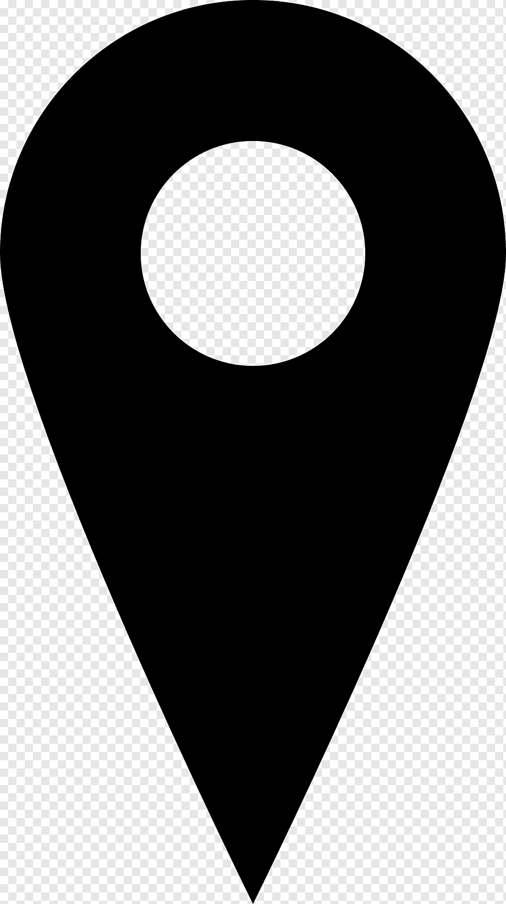

Perfil
William Henry Gates III, mais conhecido como Bill Gates, é um magnata, filantropo e autor norte-americano, que ficou conhecido por fundar a Microsoft, a maior e mais conhecida empresa de software do mundo.
Bill Gates nasceu em Seattle, Washington, em 28 de outubro de 1955. Ele é filho de William H. Gates Sr. e Mary Maxwell Gates. Bill Gates estudou na Lakeside School, onde conheceu Paul Allen, com quem fundou a Microsoft em 1975.
Bill Gates é casado com Melinda French Gates, com quem tem três filhos. Em 2000, fundaram a Fundação Bill e Melinda Gates, focada em saúde e educação no mundo todo.
Principais Competências
- Liderança
- Inovação
- Visão estratégica
- Capacidade de resolver problemas complexos
- Trabalho em equipe
Formação Acadêmica
- Harvard College - 1973 a 1975
- Lakeside School - 1967 a 1973
Experiência Profissional
- Microsoft - Fundador e CEO (1975–2000)
- Microsoft - Presidente (2000–2014)
- Microsoft - Conselheiro (2014–Presente)
Contato
 Endereço: One Microsoft Way, Redmond, WA 98052, EUA
 Telefone: +1 (425) 882-8080
Telefone: +1 (425) 882-8080
 Email: billgates@outlook.com
Email: billgates@outlook.com